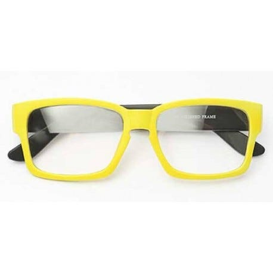

May 25, 2020
Everyone’s lense
Each one of ones has his own lense with a specifc view of the world arround him. This view is defined by the characteristics of his lense. In order to help someone see the world like we want to see, will we shape his lense so she can see it or will we adapt the thing we want to show him so she can see it ?
Someone’s lense is his most important asset, it is himself, his sub-conscience…
Trying to corrupt it is simply constraining his freedom and freedom is the most valuable thing someone can own. If we are involved in giving people more freedom, shaping lense isn’t the good method for showing something.
This is a core concept of THIS as a marketing tool. It is about making people free not forcing them buy your things or thinking
Squidoo was about lenses. It was built by the man who wears this
